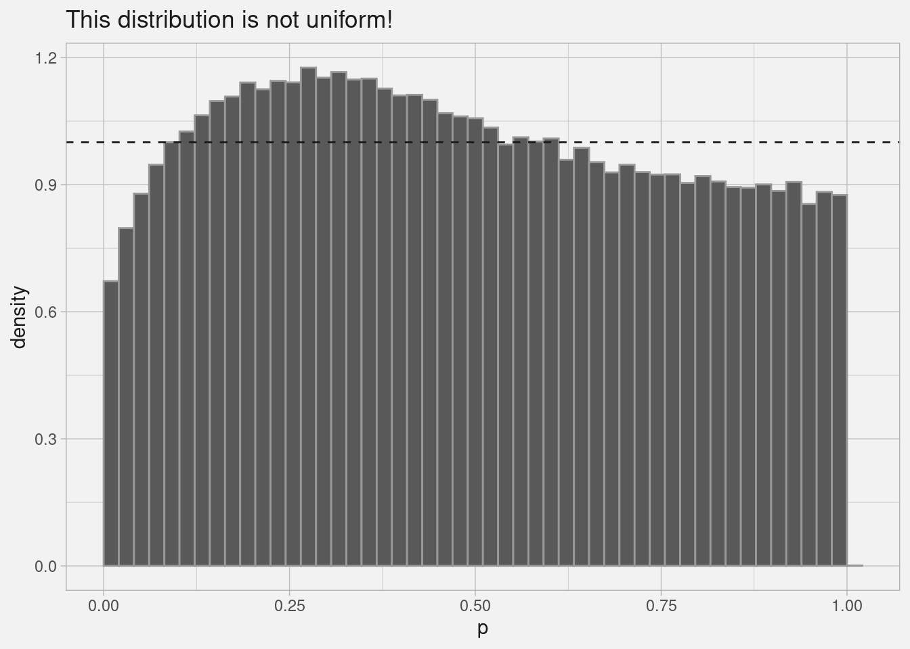

Code
library(dplyr)
library(data.table); setDTthreads(1)
library(collapse); set_collapse(nthreads = 1)collapse is sickAndrew Ghazi
November 29, 2023
I saw an R package I hadn’t heard of called collapse performing well on the duckdb database-like ops benchmark, and I thought I’d try it out on a little statistical simulation. tl;dr: collapse is sick.
I wanted to know the null p-value distribution that you’d get when mis-applying a t-test to non-normally distributed data with a small number of data points. So to simulate this I
2*pt(sqrt(6) * abs(mean(x) / sd(x)), 5, lower.tail = FALSE) where x are the random values for the group.
t.test(x)$p.value of course, but that comes with a lot of slow baggage.We’ll try it in dplyr, data.table, and collapse, making sure to use a single thread on the latter two:
And generate a synthetic dataset. We’ll use 300k groups just so we can get a really smooth histogram with a large number of bins:
g x
1: 1 1.57832991
2: 1 0.82991027
3: 1 0.37623160
4: 1 0.74914277
5: 1 -1.34526013
---
1799996: 300000 0.11979158
1799997: 300000 -0.02435893
1799998: 300000 -0.28745133
1799999: 300000 1.16550449
1800000: 300000 -1.18974355We’ll try it in dplyr, data.table, and collapse.
dplyrSo easy to write, so clean.
data.table two waysMy first attempt didn’t perform as well as I would have hoped, which turned out because I wasn’t using the GForce-optimized functions for the mean and standard deviation. To use those, the expression in j can ONLY contain the GForce-optimized functions min, max, mean, median, var, sd, sum, prod, first, last, head, tail. base::Arithmetic and stats::pt are not among them!
To solve this I used two data.table chained expressions [][]. It’s possible that there’s a more performant way to do it in one pass over the groups (while still using GForce), but I wanted to keep it to within the realm of functions I know how to write intuitively.
collapseI’ll talk about the amazing performance later, but what really impressed me is how easy it was to write. I literally just copy-pasted my dplyr solution (the gold standard of “easy to write” IMO) then typed four “f”s to switch to the collapse version of the dplyr/base functions (e.g. summarise() -> fsummarise()).
For me, “easy to write” is a HUGE benefit. Difficult to quantify, but so, so important for the interactive programming I do 80% of the time.
I tried to follow the guidelines on the data.table benchmarking guidance page, though my iterations are well under the 1 second mark recommended. I wanted to test my realistic use case, not something that’s artificially huge :shrug: .
# the all.equal() check fails because dplyr returns a tibble. That's the only difference,
# but it necessitates setting check = FALSE.
bench::mark(dplyr_soln(val_dt),
dt_soln(val_dt),
dt_fast_soln(val_dt),
collapse_soln(val_dt),
check = FALSE,
min_iterations = 2) |>
fselect(expression:mem_alloc, n_itr)Warning: Some expressions had a GC in every iteration; so filtering is
disabled.# A tibble: 4 × 5
expression min median `itr/sec` mem_alloc
<bch:expr> <bch:tm> <bch:tm> <dbl> <bch:byt>
1 dplyr_soln(val_dt) 3.78s 3.82s 0.262 50MB
2 dt_soln(val_dt) 3.16s 3.26s 0.306 12.7MB
3 dt_fast_soln(val_dt) 106.83ms 107.07ms 9.32 60.9MB
4 collapse_soln(val_dt) 52.37ms 54.37ms 18.4 29MBdata.table is about 35x faster than dplyr, and collapse is 70x faster. It somehow manages to vectorize the group-wise means / sds, but also use those as inputs to a single call to the internally vectorized stats::pt().
r-polars, and it was tied with collapse in terms of speed IF you don’t count the conversion to the pl$DataFrame() class. But the syntax was horrifying.And here’s the distribution I was trying to simulate so I can have a figure on this post. Violating the normality assumptions leads to an incorrect p-value distribution, surprise!
library(ggplot2)
collapse_soln(val_dt) |>
ggplot(aes(p)) +
geom_histogram(bins = 50, boundary = 0,
aes(y = after_stat(density)),
color = 'grey60') +
geom_hline(yintercept = 1, lty = 2, color = 'grey10') +
theme_light() +
theme(text = element_text(color = "grey10"),
strip.text = element_text(color = "grey10"),
plot.background = element_rect(color = "grey95", fill = "grey95"),
panel.background = element_rect(color = "grey95", fill = "grey95"),
panel.grid = element_line(color = "grey75"))